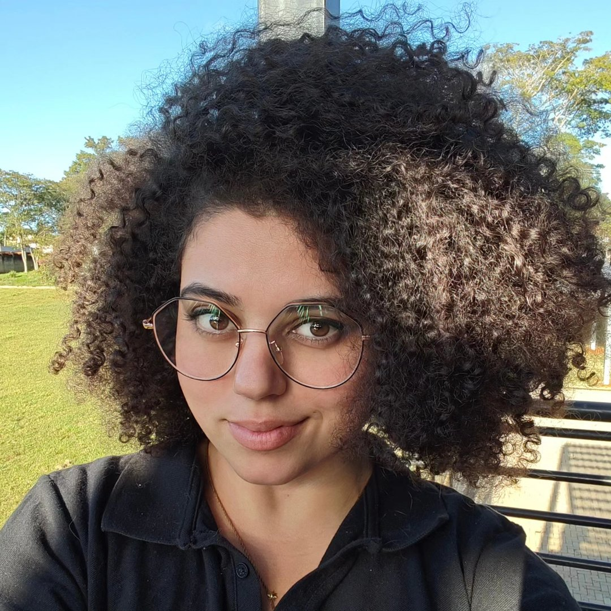

Ludimila Beltran
Mestranda em Agronomia (Ciência do Solo) · Bacharela em Ciências Biológicas · UNESP FCAV Jaboticabal
"Inventar um sentido para sua vida não é fácil, mas é sempre possível. Lembre-se que vai ser mais feliz pelo trabalho que dá."— Bill Watterson
Sobre mim
Sou Ludimila Beltran, mestranda em Agronomia (Ciência do Solo) e bacharela em Ciências Biológicas pela UNESP FCAV, campus de Jaboticabal. Participo dos grupos GAS e GEECA.
Criei o Ludimi como um espaço de divulgação científica: um lugar para compartilhar, de forma acessível, o que estudo e aprendo — na esperança de servir de apoio e ferramenta para quem também está se aprofundando nesses temas.
O que você encontra aqui
- Guias de divulgação científica pensados para quem está começando na carreira acadêmica.
- Conteúdo de Python e análise de dados, em uma trilha que evolui do básico ao avançado, intercalando código e explicação.
- Temas ligados à minha pesquisa: biomas, queimadas, legislação e machine learning.
- Gráficos, bibliotecas e aplicações práticas com código disponível no GitHub.